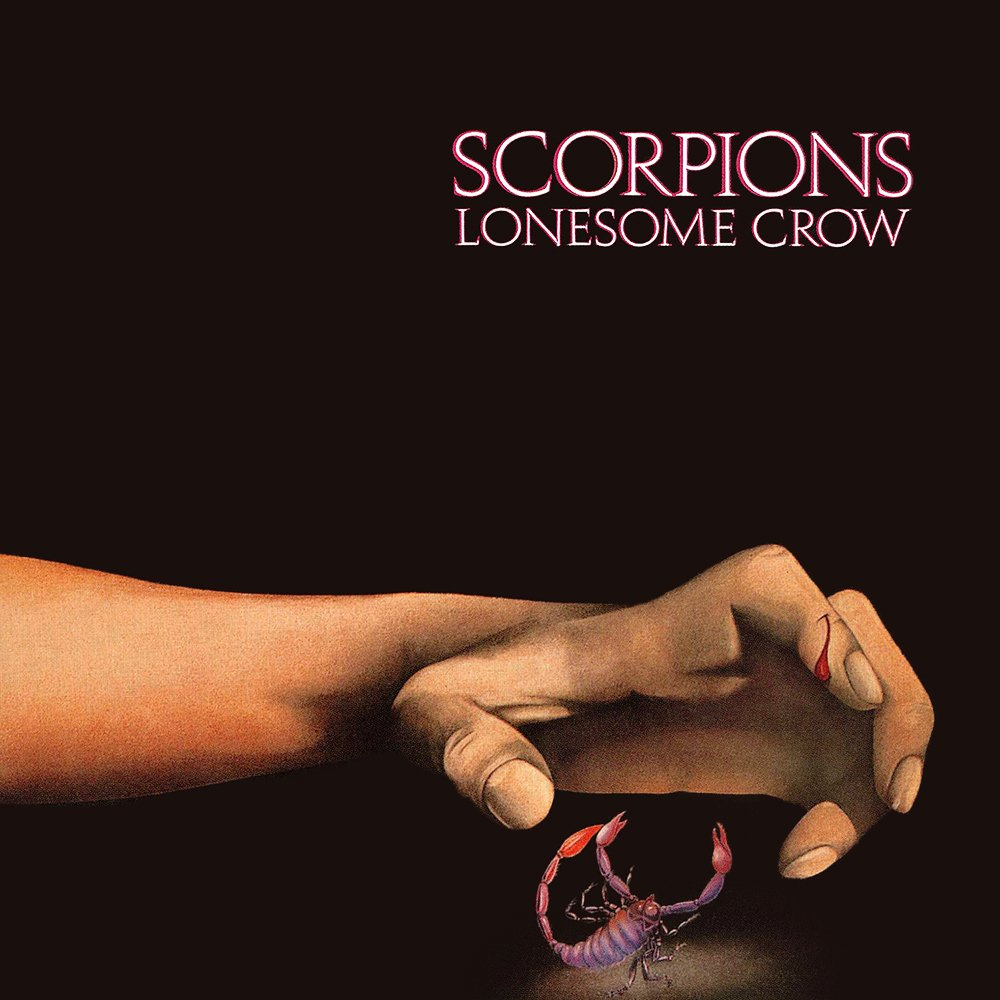
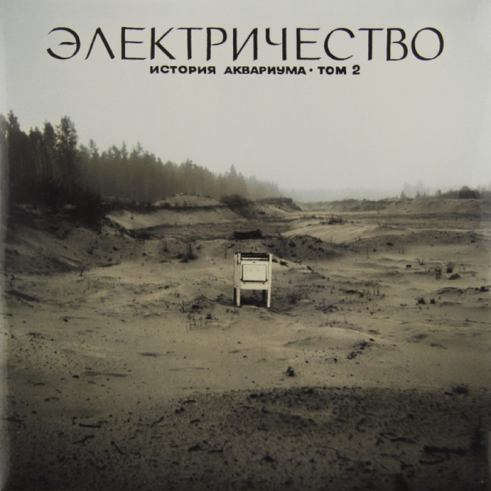
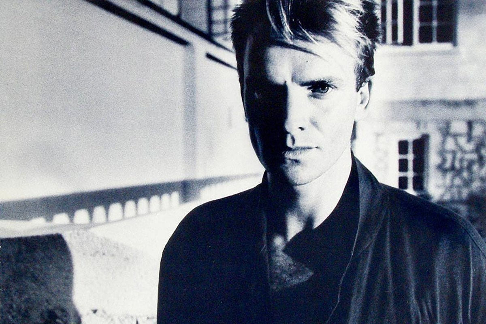
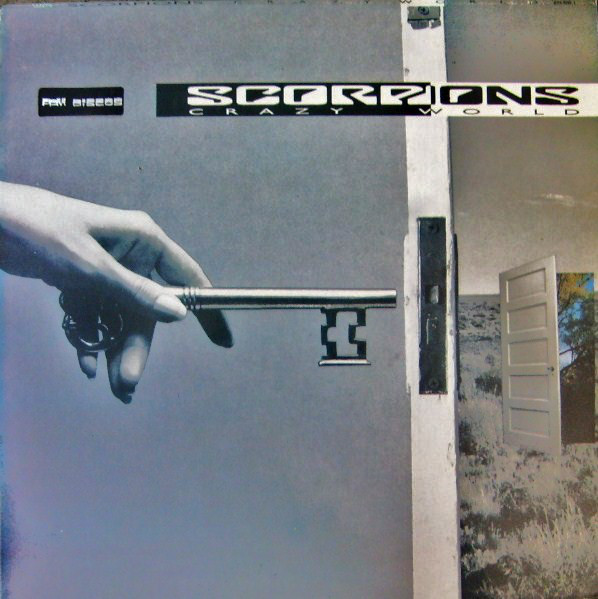
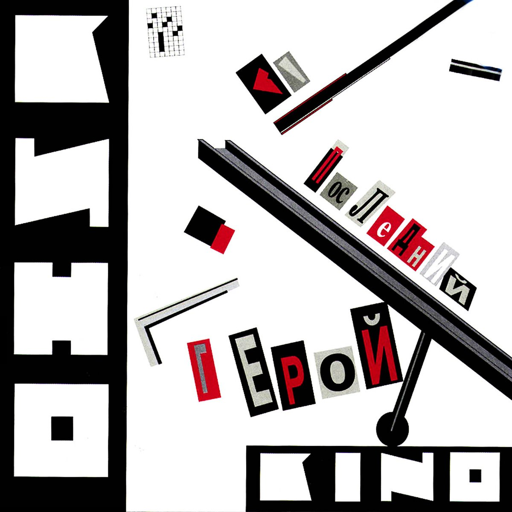
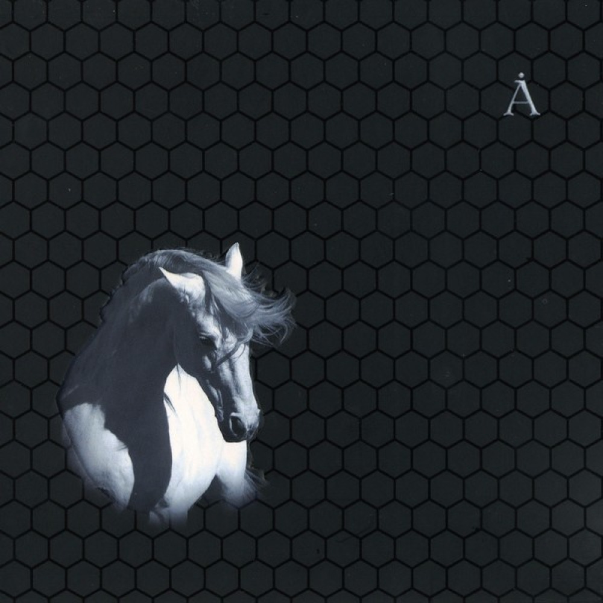
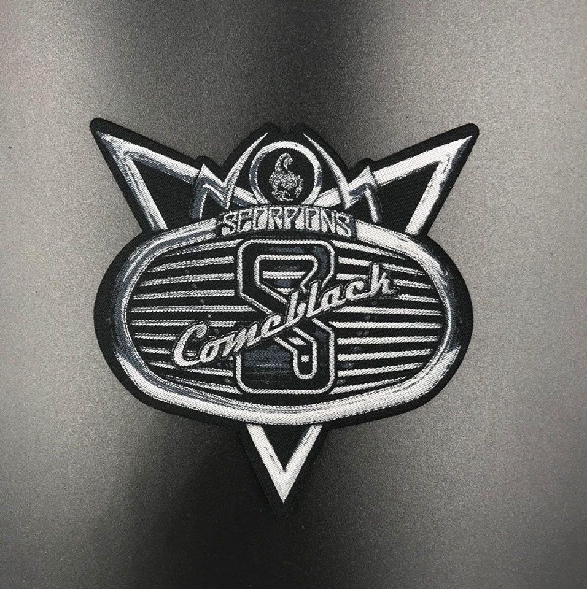

| Автор | Название альбома | Год издания | Обложка |
|---|---|---|---|
| Scorpions | Lonesome Crow | 1972 |  |
| Аквариум | Электричество | 1981 |  |
| Sting | The Dream of the Blue Turtles | 1985 |  |
| Scorpions | Crazy World | 1990 |  |
| Кино | Последний герой | 1989 |  |
| Sting | Ten Summoner's Tales | 1993 | |
| Кино | Последние записи | 2002 | - |
| Аквариум | Белая лошадь | 2008 |  |
| Scorpions | Comeblack | 2011 |  |
| Автор | Название альбома | Год издания | Обложка |
|---|---|---|---|
| Scorpions | Lonesome Crow | 1972 | |
| Crazy World | 1990 | ||
| Comeblack | 2011 | ||
| Sting | The Dream of the Blue Turtles | 1985 | |
| Ten Summoner's Tales | 1993 | ||
| Кино | Последний герой | 1989 | |
| Последние записи | 2002 | - | |
| Аквариум | Электричество | 1981 | |
| Белая лошадь | 2008 |